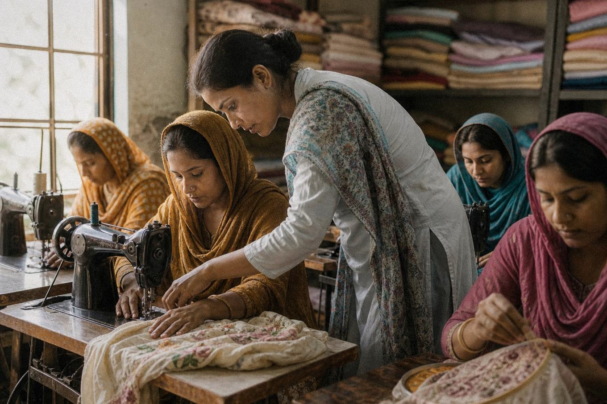

Women’s empowerment
“Ayesha’s” second income
Widowed at 34 with three children in Khanewal, Ayesha joined our tailoring course in 2025. She graduated with a free sewing machine, and today stitches for 14 regular customers — earning PKR 18,000 a month. Her eldest is back in school, in uniform, on time.